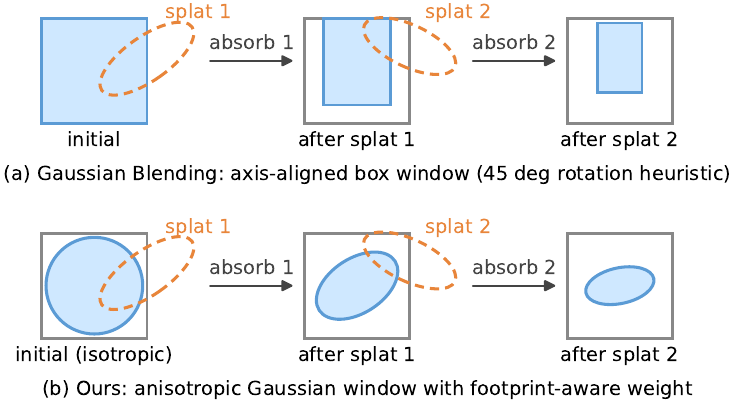
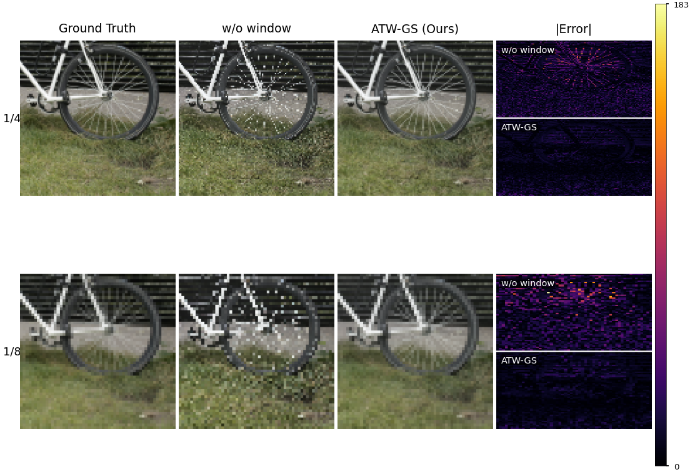

3D Gaussian Splatting (3DGS) enables real-time novel view synthesis but suffers from aliasing artifacts when rendered at sampling rates that differ from those used during training. Existing anti-aliasing methods mitigate this issue by prefiltering Gaussian primitives or integrating their response over the pixel area; however, they rely on scalar alpha composition, which treats per-pixel transmittance as a single value and therefore discards the spatial structure within each pixel. More recent spatially aware approaches maintain a per-pixel transmittance window, but represent it as an axis-aligned box, preventing the model from capturing the true orientation of projected splats. To address this limitation, we propose Anisotropic Transmittance Windows for 3D Gaussian Splatting (ATW-GS), which models per-pixel transmittance as a full covariance Gaussian that preserves splat orientation throughout the front-to-back composition sequence. Furthermore, ATW-GS computes each splat’s contribution weight using the exact error-function integral of the pixel footprint projected onto the window’s marginal axes. This ensures that consistency between the anisotropic window state and the per-splat weight computation. Extensive experiments on the NeRF Synthetic (Blender) and Mip-NeRF 360 datasets demonstrate that ATW-GS consistently outperforms state-of-the-art aliasing methods across both single-scale and multi-scale evaluation regimes.
ATW-GS replaces point evaluation with an anisotropic per-pixel transmittance window propagated through alpha compositing, without changing the training pipeline.

Point evaluation (3DGS): samples each Gaussian at the pixel centre and ignores the pixel footprint, so undersampling at lower render rates produces dilation and staircase artifacts.
Box transmittance window: integrates the footprint but keeps it axis aligned, discarding the orientation of the absorbed region.
Anisotropic transmittance window (Ours): propagates a Gaussian window with state $(\boldsymbol{\mu}_w, \Sigma_w, m)$ (centre, $2\times 2$ covariance, and mass) that rotates and narrows to match the absorbed region as splats are composited front to back, integrating each splat over its true oriented footprint.
Scale-averaged results on the Blender dataset. T4 reports PSNR only. Best per column in bold.
| Method | T1 (×1 train) | T2 (×1/8 train) | T4 | ||||
|---|---|---|---|---|---|---|---|
| PSNR | SSIM | LPIPS | PSNR | SSIM | LPIPS | ||
| TensoRF | 30.87 | .964 | .052 | 28.47 | .925 | .099 | 31.30 |
| 3DGS | 24.95 | .891 | .068 | 24.11 | .886 | .097 | 29.90 |
| Scaffold-GS | 24.92 | .895 | .070 | 22.37 | .862 | .121 | 28.48 |
| 2DGS | 23.79 | .867 | .095 | 25.94 | .909 | .104 | 28.47 |
| 3D-HGS | 25.19 | .896 | .066 | 24.38 | .887 | .100 | 30.99 |
| Tri-MipRF | 29.58 | .951 | .055 | 26.17 | .874 | .166 | 34.27 |
| 3DGS+EWA | 29.76 | .962 | .036 | 26.47 | .907 | .132 | 31.52 |
| 3DGS+SS | 28.57 | .950 | .040 | 26.68 | .914 | .074 | 32.76 |
| Mip-Splatting | 31.73 | .973 | .028 | 29.64 | .939 | .084 | 34.72 |
| Analytic-Splatting | 31.59 | .972 | .030 | 29.53 | .933 | .077 | 35.07 |
| GB | 35.58 | .981 | .020 | 31.04 | .943 | .069 | 36.19 |
| ATW-GS (Ours) | 35.80 | .981 | .020 | 31.19 | .943 | .068 | 36.35 |
Scale-averaged PSNR on Mip-NeRF 360. Best per column in bold.
| Method | T3a (×1) | T3b (×1/8) | T3c (MS) |
|---|---|---|---|
| 3DGS | 23.68 | 22.25 | 27.55 |
| Scaffold-GS | 23.87 | 22.14 | 27.50 |
| 2DGS | 23.24 | 23.98 | 26.67 |
| 3D-HGS | 23.92 | 23.03 | 28.56 |
| 3DGS+EWA | 27.87 | 24.08 | 28.11 |
| 3DGS+SS | 25.86 | 24.42 | 28.76 |
| Mip-Splatting | 28.47 | 27.15 | 29.25 |
| Analytic-Splatting | 28.23 | 26.34 | 29.21 |
| GB | 29.17 | 27.47 | 29.53 |
| ATW-GS (Ours) | 29.76 | 27.85 | 30.02 |

Effect of the transmittance window at reduced scales: point evaluation (w/o window) produces dilation that the anisotropic window removes, recovering the reference appearance.